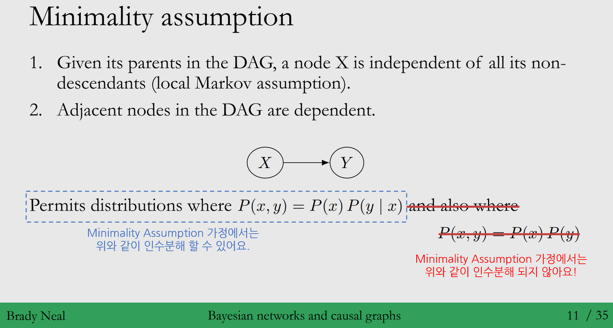
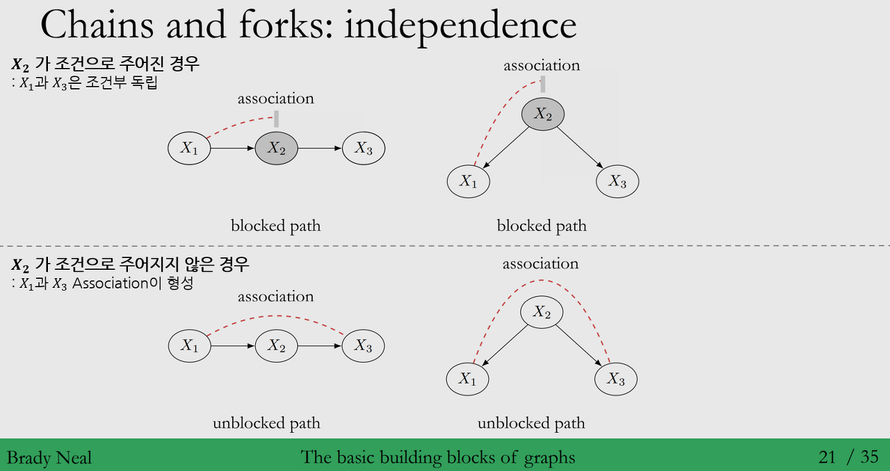
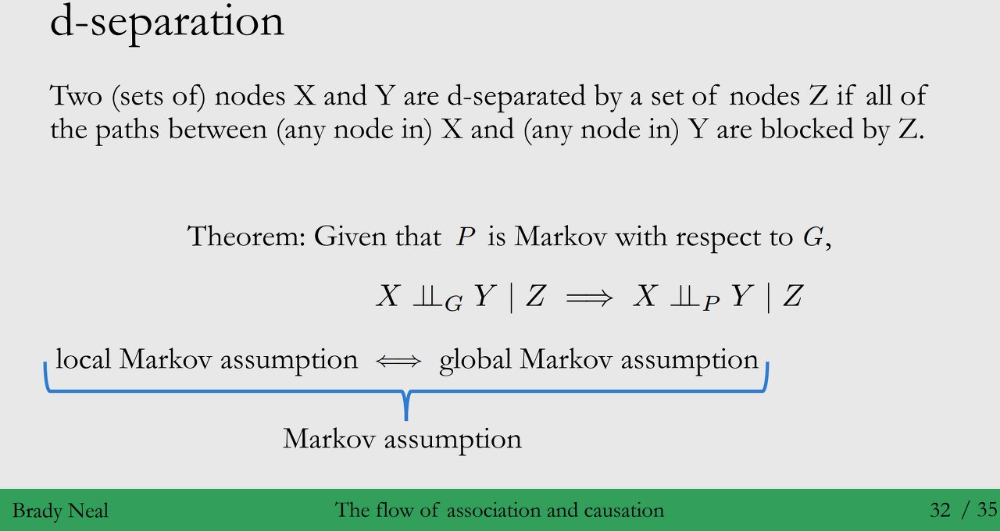

Contents
- Graphical models란 무엇인가요?
- Bayesian Networks
- Causal Graphs
- Basic building blocks of graphs
- D-separation
◦ 강의 영상 링크 : Chapter 3 - Graphical Models
작성된 내용 중 개선점이나 잘못된 부분이 있다면 댓글로 알려주세요!
(1) Graphical models란 무엇인가요?
Probabilistic graphical models, which provides a mechanism for exploiting structure in complex distributions to describe them compactly, and in a way that allows them to be constructed and utilized effectively.
“Probabilistic Graphical Models : Principles and Techniques” (2009, Daphne Koller & Nir Friedman)
- 정의 : 데이터(확률변수)간의 구조를 파악해서 복잡한 분포를 compact하게 표현할 수 있는 방법입니다.
- 목표 :
◦ 확률 변수간의 구조 표현 : 인과관계 (방향성) or 상관관계
◦ 복잡한 분포를 표현 : 확률 변수들간의 결합확률분포 (Joint Distribution)
◦ Compact하게 표현 : 분포를 구성하는 Parameter의 수를 줄이는 방식으로 표현
- Graph 정의 : Graphical model을 통해 변수들간의 구조를 시각화한 방법이 Graph 입니다. (Chapter 3에서는요!)
- 용어 정리 (Graph Terminology)
◦ Graph : 수학적으로 Node와 Edge의 집합입니다. < \(G = (V, E)\) >
◦ Node (Vertex) : Graph에서 주로 변수들을 나타냅니다. ◦ Edge (Link) : Graph에서 변수들간의 관계를 나타냅니다.
◦ 그래프 방향성 여부에 따라 2가지 형태가 존재합니다.
1) Undirected Graph : 아래 Nodes와 Edges 그림 처럼 방향성이 없는 그래프
- 예시 : Markov Random Fields, Boltzmann Machine
2) Directed Graph : 아래 오른쪽 그림처럼, 화살표가 존재하는 그래프
- 예시 : Bayesian Networks, HMM (Hidden Markov Models), Latent Variable Models◦영향을 주는 Node이면 Parent (Ancestor)이고, 받는 Node는 Child (Descendant)라고 정의합니다.
◦ DAG (Directed Acyclic Graph) : Directed graph에서 cycle이 존재하는 경우가 있지만,
DAG는 cycle이 없는 방향성 그래프에 해당 합니다.
→ Cycle이 있는 경우, Causal Inference에서 다루기 까다로워, 해당 강의에서는 DAG만 다룰 예정입니다.


(2) Bayesian Networks
위에서 설명드린 것 처럼, 방향성 그래프에 속하는 Bayesian Networks에 대해서 알아보도록 하겠습니다.
정의 : 변수 집합의 Dependency 구조와 결합확률분포를 인수분해 방식 (Factorisation)을 통해, 효과적으로 나타내는 Probabilistic graphical models 입니다.
활용 : DAG가 Bayesian Networks에 속하므로, Causal Model을 활용할 때 사용할 수 있습니다..!
Joint Distribution 표현 방법 :
◦ 변수간의 관계 (association)를 모른다면, 확률 연쇄법칙을 사용해서 다음과 같이 조건부 분포들의
(coditional distribution) 곱으로 결합분포를 표현할 수 있어요.
- \(p(x_1, \dots, x_n) = p(x_1)\prod_{i=2}^n p(x_i | x_{i-1}, \dots, x_1)\)◦ 만약 \(x_i, i=1,\dots, n\) 가 이항(binary) 변수라면, \(p(x_i | x_{i-1}, \dots, x_1)\)은 \(2^{i-1}\) 개의 모수가 필요해요.
→ 결론적으로 조건부 확률에서 조건으로 주어지는 변수가 많아지면 모수가 지수적으로 증가하게 됩니다.
◦ 필요없는 변수는 고려하지 말고 영향을 주는 변수만을 골라서 조건으로 준다면, 고려해야하는 경우가 적어지므로
필요한 모수가 적어질 것입니다..!
- 아래 예시에서 \((x_1, x_2, x_3)\)가 주어지는 경우, \(x_4\) = 1(or \(x_4=0\))인 확률, 즉 \(p(x_4|x_3, x_2, x_1)\)만
정하면 나머지 확률은 \(1-p(x_4|x_3, x_2, x_1)\)로 자동으로 정해지게 됩니다.
→ 따라서, 각 \((x_1, x_2, x_3)\) 경우에 1개의 모수만을 필요로 하게 됩니다.
◦ 다음 내용에서는 확률 분포의 조건부 독립에 대한 가정에 대해 알아보도록 하겠습니다~!

- Local Markov Assumption
◦ 정의 : DAG의 Parent가 주어지면, 노드 X는 나머지 descendants가 아닌 노드들과 독립
◦ 목적 : Conditional probability를 단순하게 만들기 위해서 입니다..!
(마치, Markov chain에서 현재 \(t\)시점의 확률분포가 이전 \((t-1)\) 시점에만 의존하는 것을 생각하면,
이해가 조금 쉬울 것 같습니다! - \(P(X_t|X_{t-1}, \dots, X_1) = P(X_t|X_{t-1})\) )
◦ 기대효과 : 결합분포에서, 조건으로 주어지는 변수가 줄어 고려해야하는 모수가 줄어들게 됩니다!
→ \(P(x_1, \dots, x_4) = P(x_1) P(x_2|x_1) P(x_3 | x_2, x_1) P(x_4|x_3)\)
◦ 예시 : 아래 그림에서 \(X_4\)는 \(X_3\)가 조건으로 주어진다면 나머지 변수들과는 조건부 독립이에요.
→ \(P(X_4|X_3,X_2,X_1) = P(X_4|X_3)\)◦ 직관 : “지능 → 성적 → 장학금 수여” 이라는 DAG를 생각해봅시다.
- 만약 어떤 학생의 성적을 안다면, 그 학생의 지능을 몰라도 장학금을 수여여부를 알 수 있게 됩니다..!
\(P(장학금|지능,성적) = P(장학금|성적)\)

- Bayesian Network Factoriation (Chain rule for Bayesian networks)
◦ 정의 : 확률분포 P와 DAG인 G가 주어졌을 때, G에 따른 P의 Factorisation은 아래와 같습니다.
\(p(x_1, \dots, x_n) =\prod_{i=1}^n p(x_i | Pa_i)\)
◦ Local Markov assumption ⟺ Bayesian network factorization
→ 위에서 배운 Local Markov assumption과 Bayesian network factorization은 같아요!
(해당 부분에 대한 증명은 Probabilistic Graphical Models 책의 Chapter 3 참고 부탁드립니다)
◦ Local Markov assumption의 한계 : 독립성(독립, 조건부 독립,…)에 대해서만 정보를 제공합니다.
→ 인접한 Node에 대해서, 종속성 (Dependence)에 대한 보장을 하기 위해서는 조금 더 강한 가정이 필요해요!
→ 그러면 Minimality assumption에 대해 배워보겠습니다.
- Minimality assumption
◦ 정의 : 해당 가정은 2가지 부분으로 구성되어 있습니다.
- Local Markov assumption
- Adjacent nodes in the DAG are dependent (DAG에서 인접한 노드들은 의존적이다)
◦ 차이점 : Local Markov assumption과 비교
- 연결된 노드 X와 Y가 있다고 가정해봅시다. - Local Markov assumption만 있는 경우, 노드 \(X\)와 \(Y\)가 있는 경우 \(P(x,y) = P(x)P(y|x)\) 뿐만 아니라,
\(P(x,y) = P(x)P(y)\) 형태도로 인수분해가 가능합니다. (노드 \(X\)와 \(Y\)가 독립)
→ 그러나, Minimality assumption에서는 추가적인 독립성 가정을 허용하지 않아요.
(그래서 해당 가정에서는 \(P(x,y) = P(x)P(y)\)에 대해 이야기할 수 없어요)
(3) Causal Graphs
- 위에서 다룬 부분은 DAG의 연관성에 (Association) 대한 부분을 다루었습니다.
그러나, 저희가 다뤄야할 인과성에 (Causation) 대해서는 추가적인 가정이 필요해요 (Causal assumption) - Causal Graphs : Bayesian Networks + 인과성 가정(Causal Edges Assumption)
What is a cause?
◦ 만약 변수 Y가 변수 X의 변화에 따라 변할 수 있다면, X는 Y의 원인이라고 합니다.(Strict) Causal Edges Assumption
◦ Directed graph에서, 모든 부모(parent) 노드는 모든 자식(children) 노드의 직접적인 원인입니다.
→ Minimality assumption의 2번째 가정이(Adjacent nodes in the DAG are dependent)
자연스럽게 strict causal edges assumption으로 연결되며, 부모는 자식의 cause라고 특정하는 가정입니다.3) Q : 그러면 Strict하지 않은 가정도 있는 건가요? (non-strict assumption)
A : 네! 그런데, 우리가 공부할 내용에 대해서는 strict 가정을 만족하는 DAG에 대해서만 다룰 예정이에요
- Assumptions Flowchart : DAG의 Causal dependencies를 파악하기 위해서 2가지 가정을 배웠습니다!
1) Markov Assumption
: DAG의 부모 노드가 주어지면, 노드 X는 나머지 descendants가 아닌 노드들과 독립2) Causal Edges Assumption
: Directed graph에서, 모든 부모 노드는 모든 자식 노드의 직접적인 원인
→ 해당 가정은 Minimality Assumption을 내포하고 있어, 위에 Markov Assumption으로 나타냈습니다.

(4) Graphical building blocks
- DAG에서 그래프를 이루는 구성요소와 흐름에 대해서 배워보려고 해요.
- 그래프의 최소 구성 요소 (D-separation 요소)는 Chain, Fork, Immorality 이렇게 3가지로 이루어져 있습니다.

- Chains & Forks : 3개의 노드로 구성된 DAG 중 Chain, Fork는 동일한 Dependency 성질을 보입니다.
◦ 설명 :
- \(X_2\)가 주어지지 않은 경우 : \(X_1, X_3\)는 직접 연결되어있지는 않지만, 연관성은 존재합니다.
→ \(X_1\)에서 \(X_3\)로 가는 통로가 차단되어 있지 않아, 그대로 정보가 \(X_3\)까지 흐르게 됩니다.
(Unblocked Path)- \(X_2\)가 주어진 경우 : \(X_1, X_3\)는 조건부 독립입니다. (연관성은 사라지게 됩니다)
→ \(X_1\)에서 \(X_3\)로 가는 통로가 차단되어 있어, \(X_1\)에 있는 정보가 더이상 흐르지 않게 됩니다.
(Blocked Path)◦ 목표 : Causal association이외의 Non-causal association 영향을 제거 (Path 차단)
- Chains : Mediator (매개변수)를 통제
- Forks : Confounder (교란변수)를 통제
◦ 사례 :
- Chains : 위에서 이야기한 사례인 “지능 → 성적 → 장학금 수여” 이라는 DAG를 생각해봅시다.
→ 만약 성적을 알고 있다면, 지능과 장학금 수여에 대한 연관성은 더이상 존재하지 않게 됩니다!
< 성적을 알고 있고, 그에 따라서 장학금을 수여 받게된 것이기 때문이죠 >
- Forks : \(X_1, X_2, X_3\)가 연관되어 있는 Fork 형태를 선형 모형으로 이해 해봅시다!
→ \(X_1 = X_2 + \epsilon_1\). \(X_3 = X_2 + \epsilon_2\)
→ \(X_2 \perp \epsilon_1, \epsilon_2\) / \(\epsilon_1 \perp \epsilon_2\)
→ \(X_2 = x\) 로 주어진다면, \(x + \epsilon_1 \perp x + \epsilon_2\)
즉, \(X_1\)과 \(X_3\)는 조건부 독립입니다.!
- Coliders(Immoralities) and their Descendants :
◦ Immoralities vs Chains & Forks :
- Immoralities는 앞에서 설명한 Chains과 Forks와 다른 구조를 가집니다.
- \(X_1\)과 \(X_3\)에 공통으로 영향받는 변수인 \(X_2\)가 주어진다면, \(X_1\)과 \(X_3\)에 연관성이 생기게 됩니다.◦ 목표 : Causal association이외의 Non-causal association영향을 제거 (Path를 차단하지 않음)
- Immoralities : Collider를 통제하게 되면, Association이 형성되므로 통제하지 X
◦ 만약 Collider의 자손 (Descendents)이 주어졌다면, 어떻게 될까요?
\(X_4\)가 주어진 경우, \(X_1\)과 \(X_3\)는 더 이상 독립이 아니게 됩니다
◦ 사례 1 : 잘생긴 사람들은 무례한가요?
- \(X_2\) (연애여부)를 통제하지 않았을 때 : 외모 (\(X_1\))와 친절함 (\(X_3\))은 독립에 가깝습니다.
- \(X_2\) (연애여부)를 통제하지 했을 때 : 연애여부를 안다면 (\(X_2\)), 연애를 하지 않는 사람들은 외모와 친절함과 음의 상관관계를 가지는 것을 확인해볼 수 있습니다…!
◦ 사례 2 : 아래와 같은 Data Generating Process를 살펴봅시다.
- \(X_1\) ~ \(N(0,1)\), \(X_2\) ~ \(N(0,1)\), \(X_2 = X_1 + X_3\)
- \(X_2\)가 조건으로 주어지지 않은 경우, 공분산은 0 (독립)
- \(X_2\)가 조건으로 주어진 경우, 공분산은 -1 (음의 상관관계)


(5) D-separation
- 일반적인 인과 모형은 앞에서 배운 Building Blocks (Chains, Forks, Immoralities) 처럼 단순하게 구성되어 있지 않아요.
따라서 복잡한 인과모형에 적용할 수 있는 규칙에 대해 확인해보도록 하겠습니다. - D-separation :
◦ 정의 : 두 노드의 집합 \(X\), \(Y\) 사이의 모든 경로(Path)가 노드 집합 \(Z\)에 의해 차단되는 경우,
\(X\)와 \(Y\)는 \(Z\)에 의해 d-separation 된다고 말합니다.◦ 의미 :
- 그래프 상에서 확인할 수 있는 d-separation은 확률분포 상 조건부 독립을 의미해요
- d-separation은 Local Markov assumption보다 더 광범위하므로 Global Markov assumption(dependencies) 라고도 해요. 이 경우에는 Local과 Global을 구분하지 않고 Markov assumption이라고 합니다…!
→ 복잡한 그래프 구조에서 d-separated 되는 경우를 알아야하고 d-separated에서 나오는
blocked path를 통해 confounding association 효과를 제거해야 합니다!→ Graphical models에서 조건부 독립의 가정/성질(local Markov assumption, d-separated)은
확률분포의 분해와 연결됩니다.
◦ 예시 :
- \(T\)와 \(Y\)는 \(\{M_1, W_2, X_2\}\)가 주어진 경우, d-separated 될까요? - \(T\)와 \(Y\)는 \(\{M_1, W_2, X_1, X_2\}\)가 주어진 경우, d-separated 될까요?
→ 정답은 댓글로 달아주세요

To be continued) 배운 Causal Graphs를 활용해 일반화된 방법인 Strcutural Causal Models에 대해 배울 예정입니다.
Reference
◦ Lecture Notes : Bayesian Networks 강의 자료 (카네기 멜론 Uni) [Link]
◦ Books : Probabilistic graphical models principles and techniques [Link]
◦ Blogs : Collider 관련 적용 NCSoft 적용 사례 [Link]
Citation
@online{hong2023,
author = {hong, seongchul},
title = {Chapter 3. {Graphical} {Models}},
date = {2023-10-31},
url = {https://github.com/CausalInferenceLab/Causal-Inference-Study-for-Analyst/posts/Chapter_3/3.Graphical_Models.html},
langid = {en}
}